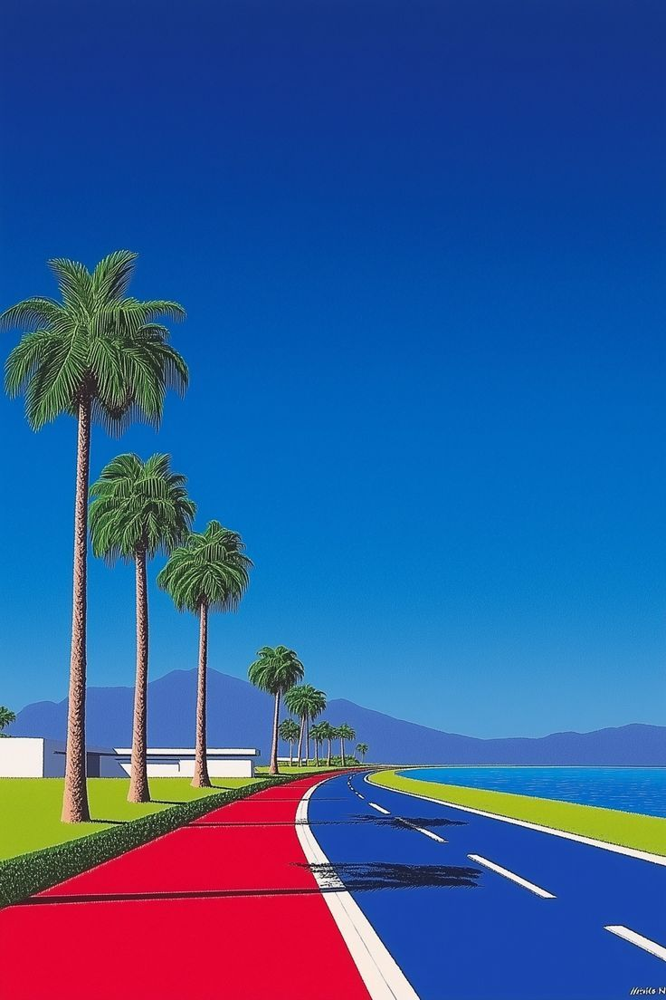

Фритрек и нулевой спринт: Подготовка к работе

Это было самое начало пути. На этом этапе важно было проникнуться основами и настроиться на учёбу. И, возможно, подумать, как новые знания могут повлиять на ваше будущее.
В нулевом спринте я установил VSCode и Git, настроил окружение и подумал, как верстка поможет в фронтенде. Это дало уверенность перед стартом.